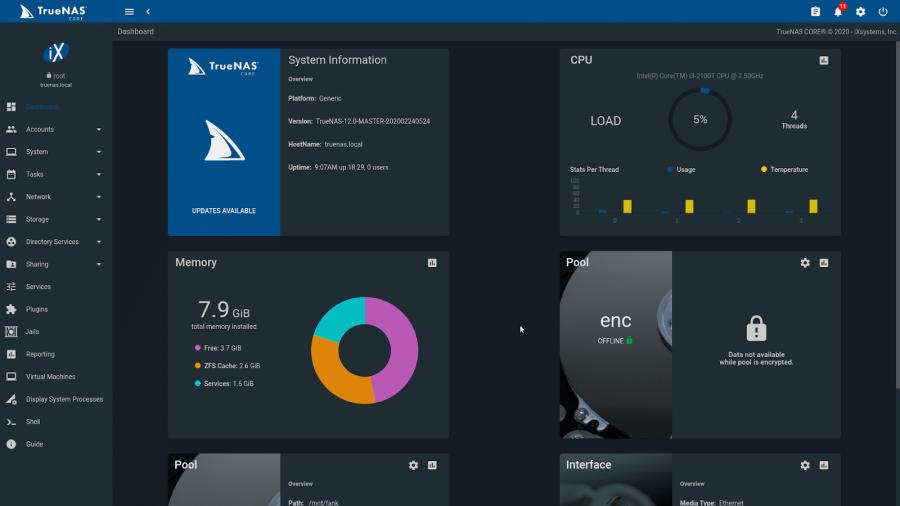
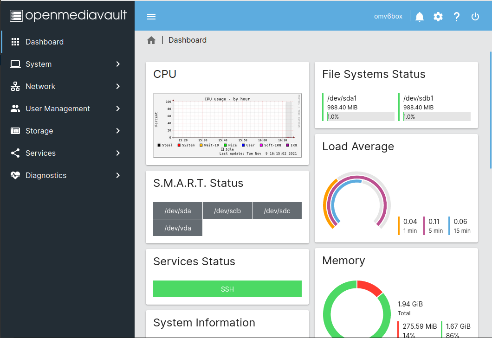
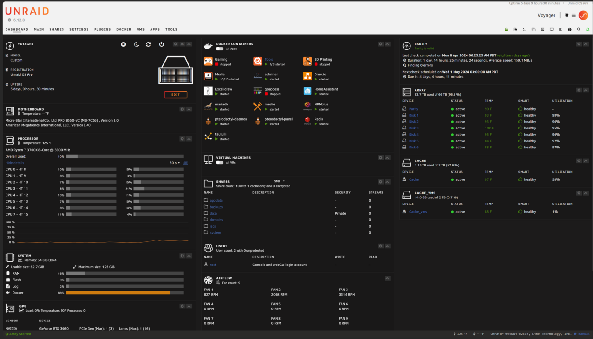
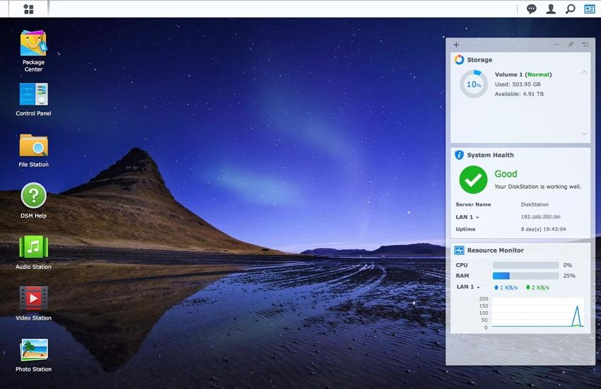
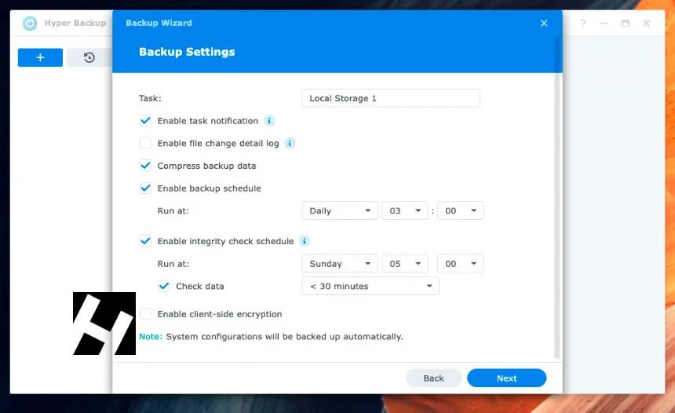
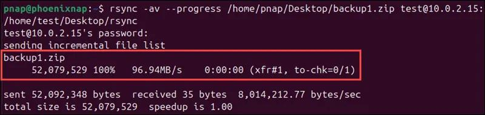
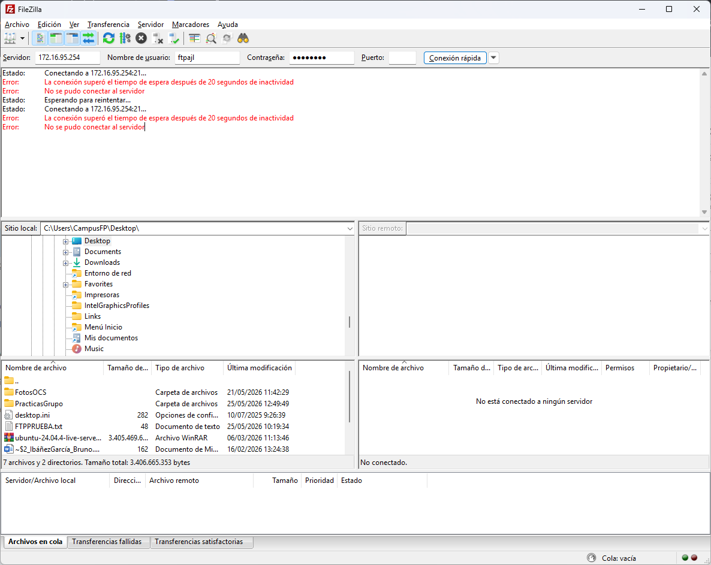
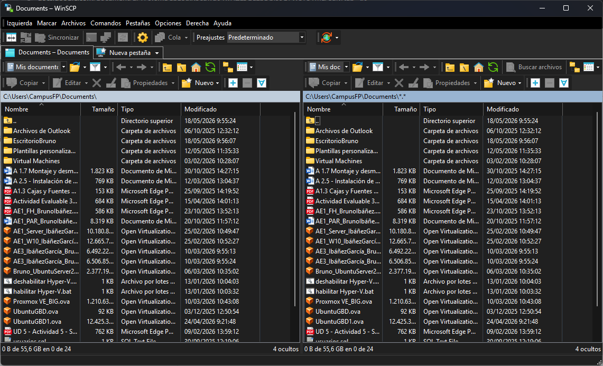
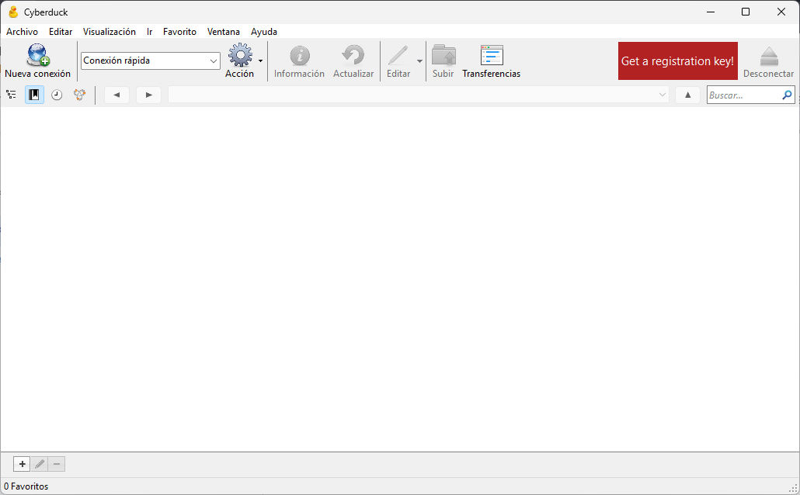

Investigación sobre sistemas operativos para instalar en NAS.
El NAS es un dispositivo que permite almacenar archivos en red y acceder a ellos desde varios equipos. Requiere un sistema operativo especializado en almacenamiento.
Es uno de los más usados por su seguridad, gratuidad y opciones avanzadas de gestión de discos y copias de seguridad.

Diseñado para principiantes, con interfaz sencilla para gestionar usuarios y carpetas compartidas.

Permite además ejecutar máquinas virtuales y aplicaciones dentro del servidor NAS.

Sistema operativo de los NAS Synology, muy fácil de usar e intuitivo.

Implementación de copias de seguridad en un NAS.
3 copias de los datos, en 2 medios distintos, y 1 fuera del sitio.
Tipos de copias: completas, incrementales o diferenciales.
Creación de volúmenes, carpetas compartidas, RAID, usuarios y permisos mínimos.
Herramientas integradas como Hyper Backup o Hybrid Backup Sync, y externas como rsync o Restic.


Frecuencia, retención, cifrado y compresión de datos.
Programación de tareas automáticas y alertas por errores.
Replicación a nube, USB u otro NAS y pruebas periódicas de restauración.
Herramientas para transferir archivos de forma segura al NAS.
Gratuita, sencilla y muy utilizada para transferencias FTP/FTPS.

Muy popular en Windows con interfaz tipo explorador de archivos.

Herramienta visual muy usada en macOS y Windows para conexiones FTP/FTPS.
